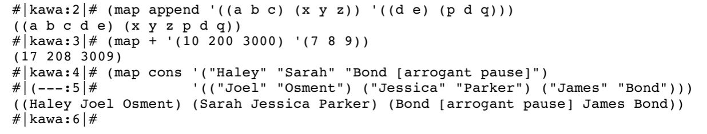
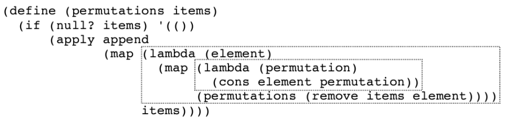

# 斯坦福编程范式 CS107_22
今天讲一下 lambda 函数的思想和几个显著的例子。
# 第一个问题
几个谨慎的数学问题，使用 scheme 解决。
# power-set
power-set 是一个包含所有子集的集合。例如对于集合 (1 2 3) ，我要列出它的所有子集，我就必须一一列举。最终我要得到的是所有子集的集合，即 power-set
(1 2 3) => (() (1) (2) (3) (1 2) (1 3) (2 3) (1 2 3)) |
我们把上面的这个列表以以下方式进行排列：尝试找出相关的规律
(() (2) (3) (2 3) | |
(1) (1 2) (1 3) (1 2 3)) |
可以看出，当以上述方式进行排列时，第二列的所有内容就是第一列的所有元素 cons 上一个 1。
函数的实现过程如下所示。
先看 lambda 函数， lambda (subset) (cons (car set) subset)) ，函数体部分为 cons (car set) subset 在上述例子中，即用 cons 将 1 加入到第一行的每个元素中，得到第二行的内容；对于 append (ps (cdr set) 即得到我们第一行的内容，并用 append 将其与第二行的内容进行连接形成最终的集合。
(define (ps set) | |
(if (null? set) '(()) | |
(append (ps (cdr set)) | |
(map (lambda (subset) | |
(cons (car set) subset)) | |
(ps (cdr set)))))) |
整个流程大概如下：
() | |
() + (3) => () (3) | |
() (3) + (2) => () (2) (3) (2 3) | |
() (2) (3) (2 3) + (1) => () (2) (3) (2 3) | |
(1) (1 2) (1 3) (1 2 3) |
在这个例子中，我们调用了两次的 ps (cdr set) ，能不能只调用一次就实现这个函数？
# 改进
在 Scheme 中有一种结构被称为 let 绑定，它和 lambda 很像，他对于调用内部函数很有用。
使用 let 将 ps-rest 当作一个符号，只用调用一次 ps(cdr set) ，节省了大量的时间。
(define (ps set) | |
(if (null? set) '(()) | |
(let (ps-rest (ps(cdr set)))) | |
(append (ps-rest | |
(map (lambda (subset) | |
(cons(car set) subset)) | |
ps-set))))) |
let 结构上本质是这样的
(let ((x expr1) | |
(y expr2) | |
(z expr3)) | |
fun(x,y,z,....)) |
# permute
我们希望 permute 能够输出数字的所有排列方式，如：
>(permute '(1 2 3)) | |
((1 2 3) (1 3 2) | |
(2 1 3) (2 3 1) | |
(3 1 2) (3 2 1)) |
从输出案例我们可以大致明白我们的函数要实现的方式。第一行全部是 1 打头的，第二行全部是 2 打头的… 以此类推。而头部之后的内容就是去掉头部元素后其余元素的全排列。去掉第一个元素的函数被构造为 remove 。
我们使用 map 进行一种新的操作方式，实现让 1 通过 map 转换成所有以 1 打头排列出来的列表，以此类推。如下
(1 2 3) => | |
((1-perms) (2-perms) (3-perms)) |
下面开始函数的实现。对于下面的函数我们先看它每一次递归的思想。我们将整个过程拆解成了，首元素 + 其余元素排列组合的形式，所以 apply append 是为了将首元素和后面部分进行拼接的过程。两个 lambda 是用来获取以 1 打头的所有排列，为了得到这样的结果，我们必须递归产生所所有不包含 1 的排列，即 permute(remove items elem) , 随后我们使用 cons elem permutation 将 1 重新加入到 不包含 1 的排列的首位。
第一个 map 是把某些东西关联上，然后能产生单个元素，也就是 items。
最终递归重点是空集合。
(define (permute items) | |
(if (null? items) '(())) | |
(apply append | |
(map (lambda (elem) | |
(map (lambda (permutation) | |
(cons elem permutation)) | |
(permute (remove items elem)))) | |
items)))) |
这里为什么第一个 map 传入的是 items ，首先我们知道 map 的计算特点：如 kawa 4️⃣所示，由于 cons 函数的特点是一个元素和一个列表进行结合，所以第一个参数尽管是列表， map 还是将其一个元素一个元素的拿出来按次序和后面的列表进行 cons 操作。所以这里的 lambda 函数也是如此，每次从 items 中拿出一个变量进行操作，即实现以 1、2、3 开头的排列。


# 数据结构
当我们输入以下内容第一行和第二行是等价的。
>'(1 2 3) | |
>(cons 1(cons 2(cons 3 '()))) |
cons 作为 scheme 的一个符号，是依附到一段代码上的，并且解析器很熟悉，知道怎么分配一段内存给这里的东西，在分配好了之后，它还要知道在这儿放什么，在那儿放什么。比如 cons 3 '() ，它就知道 3 方在 car 领域， '() 放在 cdr 领域。